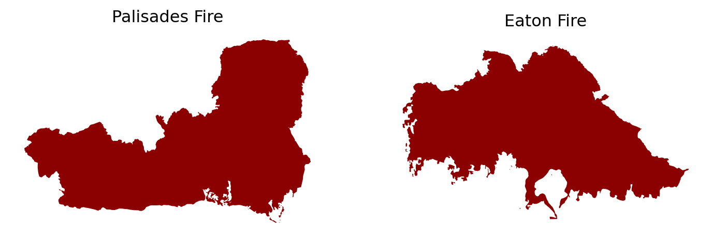
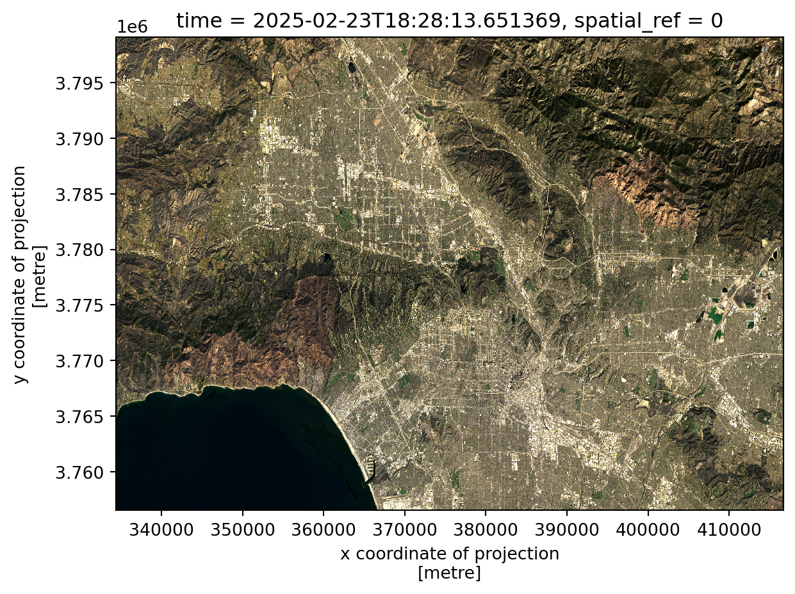
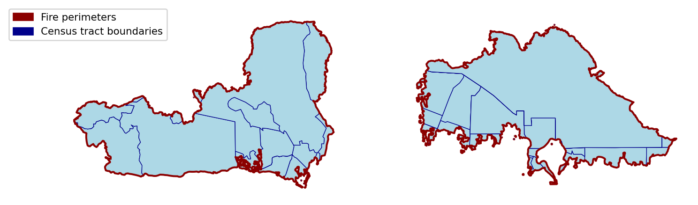
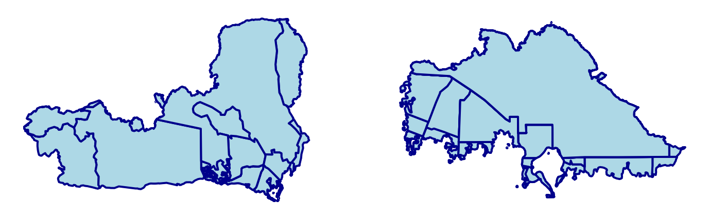

![]()
Code
import os
import pandas as pd
import numpy as np
import geopandas as gpd
import xarray as xr
import rioxarray
import contextily as ctx
import matplotlib.pyplot as pltThe Palisades Eaton Fires occurred in early January 2025 in very populated areas of Los Angeles County, California. Both fires began on January 7th and burned a total of about 37,469 acres (Starr and Morton 2025).
 Fig. 1: Fire perimeters over Los Angeles, January 2025.
Fig. 1: Fire perimeters over Los Angeles, January 2025.
In this blog, we will walk through how to create a false color image using Landsat remote sensing and fire perimeter data to highlight the locations of the Palisades and Eaton Fires. We will also look at socioeconomic risk factors that could influence a community’s response to a wildfire in the form of a chloropleth map.
geopandasxarray and rioxarraymatplotlibCheck out the full analysis in detail on the associated GitHub repository!
We will be using three datasets:
1) Fire perimeter data
The data used to map the fire perimeters were retrieved as two shapefiles from the City of Los Angeles GeoHub. The layers contained dissolved fire perimeters in the form of polygons for the Eaton and Palisades fires. Each layer contained columns with an OBJECTID, type (Heat Perimeter), shape area and shape length, and a geometry column (City of Los Angeles 2025).
2) Landsat 8 satellite data
Landsat Collection 2 Level-2 atmospherically corrected surface reflectance data collected by the Landsat 8 satellite was used for this analysis, retrieved as a simplified collection of bands from the Microsoft Planetary Computer data catalogue. This data was then clipped to the area of interest surrounding the fire perimeters and used in the form of a NetCDF with the red, green, blue, near-infrared and shortwave infrared bands as variables (Microsoft Planetary Computer n.d.).
3) Environmental Justice Index (EJI) data
2024 EJI data for California will be used for this analysis, retrieved in a geodatabase format from the Agency for Toxic Substances and Disease Registry. This data contains a variety of socioeconomic variables that could influence a community’s response to a wildfire, such as percentage without internet, aged 65+, or with asthma (Centers for Disease Control and Prevention and Agency for Toxic Substances and Disease Registry 2024).
import os
import pandas as pd
import numpy as np
import geopandas as gpd
import xarray as xr
import rioxarray
import contextily as ctx
import matplotlib.pyplot as pltFirst, we want to import the data and do some initial exploration.
# Import Palisades fire perimeter shapefile
fp = os.path.join('data', 'Palisades_Perimeter_20250121', 'Palisades_Perimeter_20250121.shp')
palisades_fire = gpd.read_file(fp)
# Import Eaton fire perimeter shapefile
fp = os.path.join('data', 'Eaton_Perimeter_20250121', 'Eaton_Perimeter_20250121.shp')
eaton_fire = gpd.read_file(fp)Palisades Fire:
# Display first row of Palisades fire data
palisades_fire.head(1)| OBJECTID | type | Shape__Are | Shape__Len | geometry | |
|---|---|---|---|---|---|
| 0 | 1 | Heat Perimeter | 1182.082031 | 267.101144 | POLYGON ((-13193543.302 4032913.077, -13193543... |
Eaton Fire:
# Display first row of Eaton fire data
eaton_fire.head(1)| OBJECTID | type | Shape__Are | Shape__Len | geometry | |
|---|---|---|---|---|---|
| 0 | 1 | Heat Perimeter | 2206.265625 | 270.199719 | POLYGON ((-13146936.686 4051222.067, -13146932... |
Both data sets contain an OBJECTID, TYPE, SHAPE__ARE, SHAPE__LEN, and GEOMETRY column. The geometry type is polygon, so we can visualize what these look like using matplotlib.
# Visualize polygons
fig, (ax1, ax2) = plt.subplots(1, 2, figsize=(9,5))
palisades_fire.plot(ax=ax1, color = "darkred")
eaton_fire.plot(ax=ax2, color = "darkred")
# Set individual subplot titles
ax1.set_title('Palisades Fire')
ax2.set_title('Eaton Fire')
ax1.axis('off')
ax2.axis('off')
plt.show()
# Examine CRS details
print('Ellipsoid:', palisades_fire.crs.ellipsoid)
print('Datum:', palisades_fire.crs.datum)
print('Is geographic?:', palisades_fire.crs.is_geographic)
print('Is projected?:', palisades_fire.crs.is_projected)Ellipsoid: WGS 84
Datum: World Geodetic System 1984 ensemble
Is geographic?: False
Is projected?: True# Check that the CRS is the same for both fire perimeter data sets
print('CRS match?:', palisades_fire.crs == eaton_fire.crs)CRS match?: TrueBased on our preliminary exploration, the fire perimeter data is made up of polygons when looking at the geometry column. Both the Palisades and Eaton fire perimeter data have the same projected CRS, WGS 84.
Next, we want to explore our xarray Landsat data, which comes in a NetCDF format. A NetCDF (network Common Data Form) is a data format that is designed to be self-describing and machine-independent, making it ideal for working with multi-dimensional datasets that have a lot of metadata required to understand the content. The NetCDF data model consists of variables (the measured quantities), dimensions (the axes/independent quantities at which we measure the variables), and attributes (metadata).
Opening our NetCDF file with xarray gives us an xarray.DataSet, which contains all of the key components of a NetCDF as well as coordinates (the dimension’s values/units) (Hoyer and Hamman 2017).
# Import Landsat data as xarray.Dataset
fp = os.path.join('data', 'landsat8-2025-02-23-palisades-eaton.nc')
landsat = xr.open_dataset(fp)
landsat<xarray.Dataset> Size: 78MB
Dimensions: (y: 1418, x: 2742)
Coordinates:
* y (y) float64 11kB 3.799e+06 3.799e+06 ... 3.757e+06 3.757e+06
* x (x) float64 22kB 3.344e+05 3.344e+05 ... 4.166e+05 4.166e+05
time datetime64[ns] 8B ...
Data variables:
red (y, x) float32 16MB ...
green (y, x) float32 16MB ...
blue (y, x) float32 16MB ...
nir08 (y, x) float32 16MB ...
swir22 (y, x) float32 16MB ...
spatial_ref int64 8B ...When exploring the landsat xarray.Dataset, we can see that the coordinates include x, y, time, and spatial_ref. The data variables are red, green, blue, nir08, and swir22. When checking the dimensions of the dataset at the top, we see that there are 1418 pixels in the y direction and 2742 pixels in the x direction, which makes up each data variable/band (red, green, blue, etc.). Click on the page icon to the right of the red variable- we see that the attributes included a spatial_ref. The other data variables contain the same attribute. There are many coordinate attributes for spatial_ref, including crs_wkt which tells us that the CRS should be EPSG 32611.
After exploring our data, we need to restore the geospatial information to the landsat xarray.Dataset and ensure that the coordinate reference systems for the fire perimeter data and landsat data match before performing further analyses.
# Check CRS of Landsat data
print('Landsat CRS:', landsat.rio.crs)Landsat CRS: Nonelandsat is not yet a geospatial object, but contains a CRS to apply in the spatial_ref variable.
# Print the CRS contained in the crs_wkt attribute of the spatial_ref variable
print(landsat.spatial_ref.crs_wkt)PROJCS["WGS 84 / UTM zone 11N",GEOGCS["WGS 84",DATUM["WGS_1984",SPHEROID["WGS 84",6378137,298.257223563,AUTHORITY["EPSG","7030"]],AUTHORITY["EPSG","6326"]],PRIMEM["Greenwich",0,AUTHORITY["EPSG","8901"]],UNIT["degree",0.0174532925199433,AUTHORITY["EPSG","9122"]],AUTHORITY["EPSG","4326"]],PROJECTION["Transverse_Mercator"],PARAMETER["latitude_of_origin",0],PARAMETER["central_meridian",-117],PARAMETER["scale_factor",0.9996],PARAMETER["false_easting",500000],PARAMETER["false_northing",0],UNIT["metre",1,AUTHORITY["EPSG","9001"]],AXIS["Easting",EAST],AXIS["Northing",NORTH],AUTHORITY["EPSG","32611"]]We can use this information to recover the geospatial information.
# Recover geospatial information by setting CRS on Landsat xarray.Dataset
landsat.rio.write_crs(32611, inplace=True)
print('Landsat CRS:', landsat.rio.crs)Landsat CRS: EPSG:32611Lastly, we need to ensure that all three data sets match in CRS.
# Reproject fire perimeter data to Landsat CRS
palisades_fire = palisades_fire.to_crs(landsat.rio.crs)
eaton_fire = eaton_fire.to_crs(landsat.rio.crs)
# Confirm changes
print('Palisades and Landsat CRS match?:', palisades_fire.crs == landsat.rio.crs)
print('Eaton and Landsat CRS match?:', eaton_fire.crs == landsat.rio.crs)Palisades and Landsat CRS match?: True
Eaton and Landsat CRS match?: TrueThe next step is to create a true color (RBG) image using our Landsat variables. In a true color image, the red, green, and blue RS bands are displayed in the red, green, blue channels, respectively.
We first want to identify if there are NaN values to deal with before plotting the true color image and which bands these lie within.
# Identify which bands have NaN values using a list of the bands
for band in ['red', 'green', 'blue', 'nir08', 'swir22']:
count = np.isnan(landsat[band].values).sum()
print(f"There are {count} NaN values in the {band} band.")There are 0 NaN values in the red band.
There are 1 NaN values in the green band.
There are 109 NaN values in the blue band.
There are 0 NaN values in the nir08 band.
There are 0 NaN values in the swir22 band.# RGB image with substituted NaN values and adjusted scales
landsat[['red', 'green', 'blue']].to_array().fillna(0).plot.imshow(robust = True)
plt.show()
Using robust = True uses 2nd and 98th percentiles of data instead of absolute min and max avoids extreme outliers like clouds to make the image visible, correcting any scale and clipping range issues that might be encountered otherwise. Filling the NaN values (found mostly in the blue band) with 0 allows the values to be correctly cast and plotted. The final true color image shows a visible range of the band values.
Next, we want to plot a preliminary false color image using the short-wave infrared (swir22), near-infrared, and red variables mapped to the red, green, and blue channels respectively. This allows us to see non-visible wavelenghts and better show aspects of our environment like burn severity.
# Create false color image
landsat[['swir22', 'nir08', 'red']].to_array().fillna(0).plot.imshow(robust = True)
plt.show()
Lastly, we want to combine all of our data into a visualization of false color fire scars and the original fire perimeters using matplotlib. Check out the code below to see how this was plotted in detail!
# Create map
fig, ax = plt.subplots(figsize = (10,8))
# Add false color image
landsat[['swir22', 'nir08', 'red']].to_array().fillna(0).plot.imshow(ax=ax, robust = True)
# Add fire perimeters
palisades_fire.plot(ax=ax,
color = "none",
edgecolor = "darkred",
linewidth = 1.2)
eaton_fire.plot(ax=ax,
color = "none",
edgecolor = "darkred",
linewidth = 1.2)
# Title
ax.set_title("False Color Image of Palisades and Eaton Fires, \n Los Angeles County (2025)",
size = 13)
# Remove axes ticks
ax.set_xticks([])
ax.set_yticks([])
# Remove axes labels
ax.set_xlabel("")
ax.set_ylabel("")
# Add fire names as text annotations
ax.text(palisades_fire.geometry.centroid.iloc[0].x - 6000,
palisades_fire.geometry.centroid.iloc[0].y + 9000,
"Palisades Fire",
color = "white",
fontsize = 8,
ha = 'right',
bbox = dict(facecolor='black', alpha=0.8, edgecolor='none', pad=2, boxstyle= "round, pad=0.3"))
ax.text(eaton_fire.geometry.centroid.iloc[0].x - 1000,
eaton_fire.geometry.centroid.iloc[0].y - 1000,
"Eaton Fire",
color = 'white',
fontsize = 8,
ha = 'right',
bbox = dict(facecolor='black', alpha=0.8, edgecolor='none', pad=2, boxstyle= "round, pad=0.3"))
# Add figure caption
plt.figtext(0.12, 0.13, " This false color image highlights the fire scars of the Palisades and Eaton Fires in Los Angeles County, California in early January \n 2025. Assigning SWIR, NIR, and red bands to visible colors helps to increase the visibility of the effects of the fires, such as burn \n severity and vegetation health compared to surrounding areas.\n \n Data Sources: City of Los Angeles GeoHub and Microsoft Planetary Computer \n Accessed Nov. 20, 2025", fontsize = 8.5)
plt.show()
In this analysis, we were able to process data in the form of shapefiles and a NetCDF in order to create a false color image showing fire burn scars. The Palisades and Eaton Fires clearly had an effect on the environment shown in our map, as these red areas contrast with the surrounding green.
@online{robillard2025,
author = {Robillard, Ava},
title = {EDS 220: {Eaton} and {Palisades} {Fires}},
date = {2025-12-01},
url = {https://avarobillard.github.io/posts/2025-12-01-eds220},
langid = {en}
}
Social dimensions of Eaton and Palisades fires
Next, we want to look at the distribution of a socioeconomic variable within the bounds of the fires to better understand how the fires might have impacted different groups within the communities. One of the variables included in the Environmental Justice Index is the percentage of of persons without internet within each census tract.
1. EJI data exploration
First, we want to import the data and do some initial exploration.
Code
Code
Code
We need to spatially join the EJI data with the fire perimeters based on the geometry column, so we use an inner join to keep only the rows from EJI that intersect with the fire perimeter polygons.
Code
Our data now contains both fire perimeter and EJI data.
Code
3 rows × 179 columns
When plotting this joined data, we see that the census tracts that were kept due to an intersection cover far more space than the fire perimeters, shown in dark red.
Code

3. Polygon clipping
To further reduce the census tracts to the fire perimeter boundaries, we will clip the census tracts to Palisades and Eaton fire perimeter using
geopandas.clip().Code
Code

5. Visualize EJI data
Lastly, we can use these clipped polygons to visualize the values of our variable of interest (percentage of persons without internet) within the census tracts within the fire perimeters.
Code
Based upon this map, we can see that some areas, especially within the Eaton Fire perimeter, had percentages of people without internet as high as 16%. Targeting these census tracts for wildfire resilience programs such as providing pre-planned courses of action when signs of fire are noticed or a list of places to notify using alternative methods in the case of a fire would be beneficial.